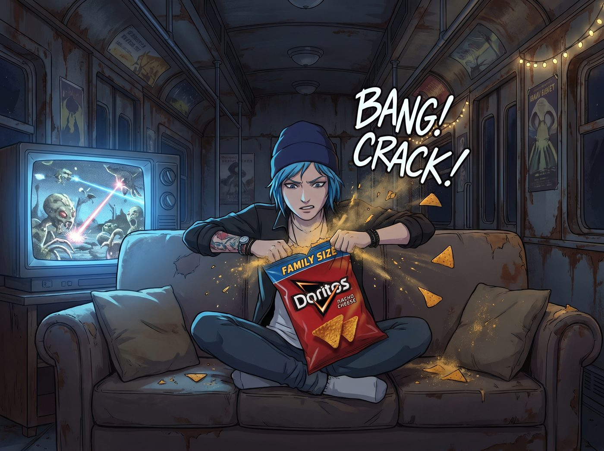
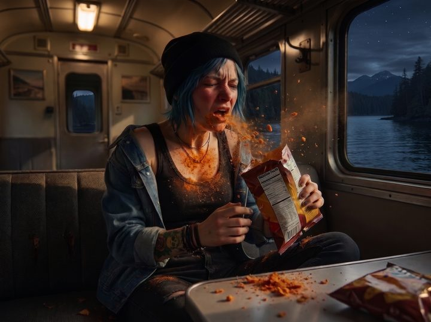

開袋儀式


一、深夜十一點
中節車廂的頂燈已經關了，只剩下電視螢幕幽幽的藍光，播著一部連導演自己大概都不知道在拍什麼的八〇年代 B 級科幻片。
Chloe 盤腿窩在沙發左半邊，懷裡抱著一包家庭號的濃郁起司味多力多滋。
如果這包東西落在 Max 手裡，她會捏住袋子右上角那個小小的鋸齒缺口，小心翼翼地撕開兩公分，讓裡面的氮氣像嘆氣一樣慢慢漏出來，生怕吵醒森林裡的松鼠。
但現在抱著它的，是 Chloe Price。
她兩手抓住袋子兩側，往反方向狠狠一扯。
「砰——！」
一聲脆響在安靜的車廂裡炸開，堪比一發小口徑子彈。袋口裂開一道毫無規則可言的大口子，幾片無辜的三角形玉米片直接飛了出來，落在沙發靠墊上。
角落裡看書的 Lily 連眼皮都沒抬，顯然早就對這種物理拆袋法免疫了。倒是窩在沙發另一頭的 Max，被嚇得縮了一下脖子。
「妳就不能像個文明人一樣開零食嗎？」Max 抱怨了一句，身體卻很誠實地往 Chloe 那邊挪了挪，把雙腿搭到她大腿上。
「那樣太不搖滾了，Caulfield。」Chloe 撿起一片掉在胸口的玉米片塞進嘴裡，咔嚓一聲，「打開垃圾食品就是要聽那一聲。那叫多巴胺的前奏。」
她把袋口轉向 Max。
兩個人吃玉米片的方式，完全是兩個物種。
Max 每次只用大拇指和食指，精準地捏起一片。吃完以後，她會盯著指尖那一層橘紅色的起司粉，先斯文地抽一張紙巾擦乾淨，才去翻腿上的攝影雜誌。她絕對不允許任何一點油沾到紙頁或者鏡頭上。
Chloe 則是純正的浣熊進食法。一次抓三四片，往嘴裡一塞，拇指和食指很快就裹上了一層厚厚的橘色粉末。她不用紙巾。吃完一輪，她會響亮地「嘖」一聲，把每根手指頭吸得乾乾淨淨，然後毫不客氣地把手搭回 Max 的小腿上。
「嘿！別把妳的起司爪子印在我褲子上！」Max 一巴掌拍開她的手。
電影演到一半，這包家庭號終於被消滅了一大半。Chloe 打了個哈欠：「不行了，這電影比 Lily 的稅法講座還催眠。剩下的留明天配三明治。」
她隨手把袋口往下胡亂一折，像揉廢紙一樣壓兩下，往茶几上一扔。開口已經慢慢彈開了，裡面的玉米片毫無防備地暴露在太平洋西北潮濕的夜裡。
五秒鐘後，Max 嘆了口氣。
她放下雜誌，傾身把袋子拿回來，先把裡面的空氣仔細擠出去，再把袋口整整齊齊地往下折三折，然後伸手去拉茶几的抽屜——那裡平常放著一個 IKEA 的塑膠封口夾。
抽屜裡沒有。
她翻了翻沙發縫，又看了看茶几底下。也沒有。大概又被誰拿去夾別的東西了。
Max 想了兩秒，起身走進暗房，回來的時候手裡多了一個木頭夾子——平常拿來把剛沖洗好的底片夾在晾片繩上的那種。
「啪」一聲，嚴絲合縫地夾住了袋口。
「如果沒有我，」她把封好的袋子放回茶几上，「妳明天早上就只能吃一袋起司味的濕紙板了。」
Chloe 看著那個夾在零食袋上的暗房夾子，咧嘴笑了：「我的女朋友，用專業攝影器材封印垃圾食品。」
「那是我最便宜的專業攝影器材。」
二、隔天下午
這包多力多滋，沒能撐過隔天下午。
袋子見底的時候，只剩下最後一層混著大量起司粉和鹽粒的細碎玉米渣。
Max 已經徹底放棄進攻。手伸進去，只會摸到一手油膩的碎屑。
「最後那些給我。」Chloe 伸出手。
「妳確定？底下全是碎渣跟調味粉。」
「那才是整包的靈魂，Caulfield。濃縮的精華。」
Chloe 接過袋子，先把兩個角落的碎屑往中間抖了抖，匯聚成一道完美的小山溝。
然後她仰起頭，張大嘴，把那個閃亮的鋁箔袋高高舉起，以一種在沙漠裡喝最後一滴水的豪邁姿勢，對準嘴巴，直接倒了下來。
這是一個高風險的特技動作。
昨晚被她暴力撕開的袋口，呈現出一種極不規則的鋸齒狀。碎屑傾瀉而下的時候，大概七成成功落進了嘴裡；剩下三成，順著袋口旁邊一道小小的裂縫，像一場橘紅色的暴風雪，精準地灑在了她的下巴、脖子，以及那件黑色背心的領口裡。
「咳、咳咳！」
Chloe 被嗆到，狼狽地放下袋子。胸前多了一片橘紅色的星雲。
Max 不知道什麼時候已經舉起了拍立得。趁 Chloe 還在低頭拍打胸口的碎屑，她毫不留情地按下了快門。
「真是感人肺腑的搖滾精神。」她看著相紙慢慢吐出來，「需要我幫妳把吸塵器拿過來嗎，精華大師？」
Chloe 瞪了她一眼，從鎖骨上拈起最後一小片碎渣塞進嘴裡，然後帶著滿嘴濃郁的起司味，猛地撲過去，把 Max 壓倒在沙發上。
「吸塵器不用了。」她說，「但妳得負責把我下巴上的起司粉清乾淨。」
角落裡，Lily 翻過一頁書，默默把椅子轉了九十度，面向窗外。